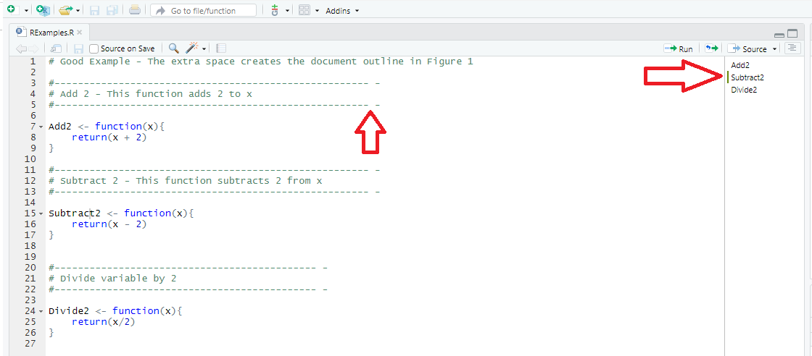
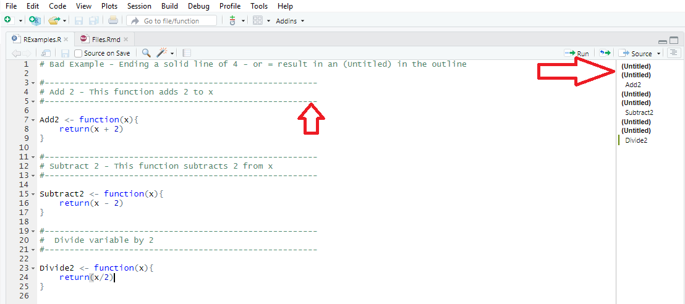

2 Files
2.1 File Naming
File names should be meaningful and end in .R. This style agrees with Google’s recommendation of using BigCamelCase for file names. Do not use special characters in the file names and use only letters or numbers. That is, no spaces, - or _ should be included in a file name. While - or _ do make the file names more readable than running words together like runningwordstogether, the use of - or _ requires extra key strokes when compared to BigCamelCase where the first letter of each word is capitalized.
File names should be descriptive and provide insight into what the file contains. Generic names like foo.r or stuff.r should not be used. Vague file names like calculate.r are discouraged and more descriptive like CalculatePosteriorProbs.R are preferred.
Examples:
# Good Examples
CalcuatePosteriorProbs.R
AnalyzeSurvivalData.R
InputFunctions.R
# Bad
calculate.r
foo.r
get file name.r
functions for stuff.r If files should be viewed or executed in a particular order, prefix the file name with a number using two digit format starting at 00.
00_SimulateData.R
01_SimulateArrivalTimes.R
02_CreateDataSet.R
...
09_LogisticRegressionModel.R
10_BetaBinomialModel.RCapitalization can be important when sharing files with collaborators on differing operating systems and source control systems. Do not name files where the only difference is the capitalization.
2.2 File Organization
2.3 Internal Structure
Files should be kept as short as possible and not include numerous functions or R source. If a file contains many functions and is very long, it should be broken into meaningful files to group common functionality. Break the file into meaningful code blocks, preferably as functions, and separate code blocks by comments using -, # or =. [ QUESTION: Should we allow all 3 for comments, eg -, # and = or just a subset like the first two? ]
# Create simulated data ------
# Plot results ====
# Save output ####Each comment should end with 4 consecutive -, # or = as this helps with providing well organized outline in R studio. In addition, If you create a comment block, surrounded by —–, ===== or #### then please make sure you put a space preceding the last charater. The space is to help with creating organized document outline in RStudio for R files.
# Good Example - The extra space creates the document outline in figure below
#------------------------------------------------------ -
# Add2 - This function adds 2 to x
#------------------------------------------------------ -
Add2 <- function(x){
return(x + 2)
}
#------------------------------------------------------ -
# Subtract2 - This function subtracts 2 from x
#------------------------------------------------------ -
Subtract2 <- function(x){
return(x - 2)
}
#--------------------------------------------- -
# Divide variable by 2
#--------------------------------------------- -
Divide2 <- function(x){
return(x/2)
}Good example with red arrows to indicate the extra space and resulting file outline to the right. 
# Bad Example - Ending a solid line of 4 - or = result in an (Untitled) in the outline
#-------------------------------------------------------
# Add 2 - This function adds 2 to x
#-------------------------------------------------------
Add2 <- function(x){
return(x + 2)
}
#-------------------------------------------------------
# Subtract 2 - This function subtracts 2 from x
#-------------------------------------------------------
Subtract2 <- function(x){
return(x - 2)
}
#-------------------------------------------------------
# Divide variable by 2
#-------------------------------------------------------
Divide2 <- function(x){
return(x/2)
}Bad example of comments, notice how the (Untitled) appears in the document outline 